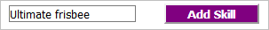
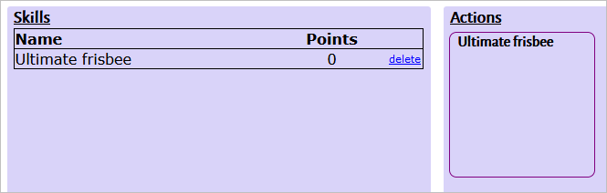
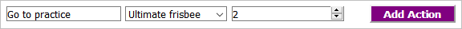
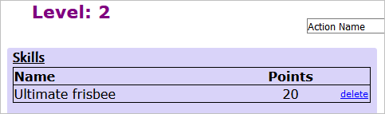
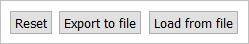

- Enter a skill name in the box and click 'Add Skill'
- Skills can be deleted by clicking 'delete'
- Enter an action name, select the correspoding skill, and enter a point value between 1 and 4
- The specified number of points will be added to the corresponding skill's total
- For every 20 skillpoints earned, combined for all skills, you will gain a level

- Skillpoints are automatically saved between browser sessions but can be reset by clicking 'Reset'
- Some browsers will allow you to export your skillpoints to a file, which can be loaded later on another browser or computer
